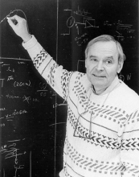

Please note: the AAS Obituaries are temporarily being hosted on this website while their full content is being ingested into the PubPub publishing platform newly adopted by the Bulletin of the American Astronomical Society. When the migration is complete, your existing links will take you to the final, migrated content. Contact peter.williams@aas.org with any questions.
David Todd Wilkinson (1935-2002)
David Todd Wilkinson died on 5 September 2002. He had battled cancer for seventeen years. His role in the measurements of the thermal cosmic background radiation (the CMB) was key to the completion of the program of cosmological tests that began around the time of his birth in the 1930s.
Dave was born on 13 May 1935 in Hillsdale, Michigan, and was raised and received his early education there. His mother and father are Thelma Todd (d. 1994) and Harold Wilkinson (d. 1994). From his father, a self-employed electronics specialist, Dave developed a strong interest in how things work. His mother was an elementary school math teacher and she maintained high academic standards for her sons. An older brother, Ramon (d. 1999) was an aeronautical engineer. As a student at the University of Michigan, Dave played saxophone in a jazz band. He earned a BS in Engineering in 1957, and an MS in Engineering in 1959. Since a course on steam tables had turned his interest to physics, he stayed at Michigan for further graduate work with Richard Crane. In 1962 Dave defended his thesis, a test of the quantum theory of electromagnetism titled A Precision Measurement of the g-Factor of the Free Electron , and completed his PhD in Physics. He remained at Michigan for another year as an instructor.
Dave joined Bob Dicke’s research group at Princeton University in 1963. His first project at Princeton, with Dicke, was the design of optical retro reflectors that the Apollo astronauts placed on the moon. Laser ranging with the retro reflectors is still providing measurements of the distance of the moon for precision tests of gravity physics. With Peter Roll and Jim Peebles, Dave then set out to search for the faint cosmic microwave background (CMB) radiation that would fill the universe in a hot Big Bang cosmology. At the same time Robert Wilson and Arno Penzias at Bell Laboratories were seeking diffuse emission from the outer parts of our galaxy. Their search required a helium cold load that made their experiment sensitive to the CMB. News of the Princeton experiment led them to believe that they had found the thermal radiation Wilkinson and Roll were seeking. The Princeton and Bell Labs results, at different wavelengths, gave the first evidence that the CMB spectrum agrees with the hot Big Bang.
Realizing that accurate measurements of the CMB would be an invaluable probe of the large-scale structure and evolution of the universe, Dave led pioneering studies of experimental cosmology from 1965 to the time of his death. These experiments were aimed at checking whether the CMB spectrum really is close to thermal, as required of a remnant of the hot Big Bang, and whether there are tiny variations in the radiation temperature across the sky, as would be produced by the gravitational growth of the present clustering of matter in an expanding universe. His experiments include the first CMB balloon flights, the first dedicated CMB polarimeter, and the first dedicated CMB interferometer. He established the learning curves for these difficult measurements, and found the best places to do them: Princeton rooftops, deserts, mountains, balloons, and space. The results have driven the development of the standard model for cosmic structure formation and the new generation of cosmological tests. In the process Dave trained a large fraction of the scientists now engaged in this wonderfully productive field of experimental cosmology.
Dave had an important influence on the origin of the COBE (Cosmic Background Explorer) satellite. COBE demonstrated that the spectrum of the CMB is very close to thermal, compelling evidence that the universe expanded from a denser hotter state because space now is transparent and is incapable of thermalizing the radiation. The WMAP (Wilkinson Microwave Anisotropy Probe) satellite now in orbit is making accurate measurements of the angular distribution of the CMB temperature. WMAP’s design follows Dave’s philosophy: keep it simple, but build in abundant checks for systematic errors. He was delighted with the results; the community is witnessing yet another great advance in precision tests of the relativistic cosmological model. The satellite was renamed this past February to honor Dave. Dave had many other scientific interests. With Princeton students and colleagues he studied precision optical pulsar timing in our galaxy and placed bounds on pulsars in nearby galaxies; pioneered the use of CCD detectors for cosmology; introduced the search for the young galaxies at high redshift that now are teaching us so much about how galaxies formed; and developed methods for the measurement of the energy density in starlight integrated back to the edge of the observable universe, a critical datum for cosmology. Most recently, a freshman seminar on extraterrestrial life led him to team up with a Harvard project to detect fast optical pulses that an advanced civilization might send our way. Dave organized a volunteer group to revitalize Princeton’s Fitz Randolph Observatory and recruited amateur astronomers to run the project.
Dave was passionate about teaching. He gave demonstrations of giant bubbles at elementary schools. He lectured to Princeton alumni groups and to state and federal judges. He was a member of working groups on undergraduate education at the National Academy of Sciences and the American Physical Society. He helped develop an intensive sophomore course in experimental physics and a three-semester introductory physics course that brought students who might have been turned off by the pace of the standard introductory physics course into science and technology. And when Dave taught the standard course, his ratings by his students were among the highest at the University. For all that, however, Dave preferred to teach graduate students in the laboratory; they learned from him to be mentors as well as physicists. Elected to the National Academy of Science in 1983, Dave was further honored by the award of the NAS James Craig Watson Medal in 2001. He was a fellow of the American Academy of Arts and Sciences and the American Physical Society. The University of Chicago conferred an honorary PhD on Dave in 1996.
In 1984, Dave married Eunice Dowell, who survives him along with his two children, Wendy and Kenton, and three stepchildren, Marla, Michael and Janice Dowell. His family remembers him most recently for his devotion to his five grandchildren, for his love of fishing, hiking and family vacations and as an ardent fan of the New York Yankees. Dave’s science often took the path less traveled, with results that have seeded large and active fields. He showed by example that the experimenter’s conscience can be the best defense against bad science. Dave embodied so much of what we aspire to as scientists and as people. His effortless charm and natural affinity for people, his generosity with time, and his total absence of self-promotion, brought out the best in all who were privileged to know him.
Photo Courtesy of Robert Matthews
Obituary written by: John C. Mather (NASA's Goddard Space Flight Center), Lyman Page (Dept. of Physics, Princeton University), P. James Peebles (Dept. of Physics, Princeton University)
BAAS Citation: BAAS, 2003, 35, 1480
SAO/NASA ADS Bibcode: 2003BAAS...35.1480M